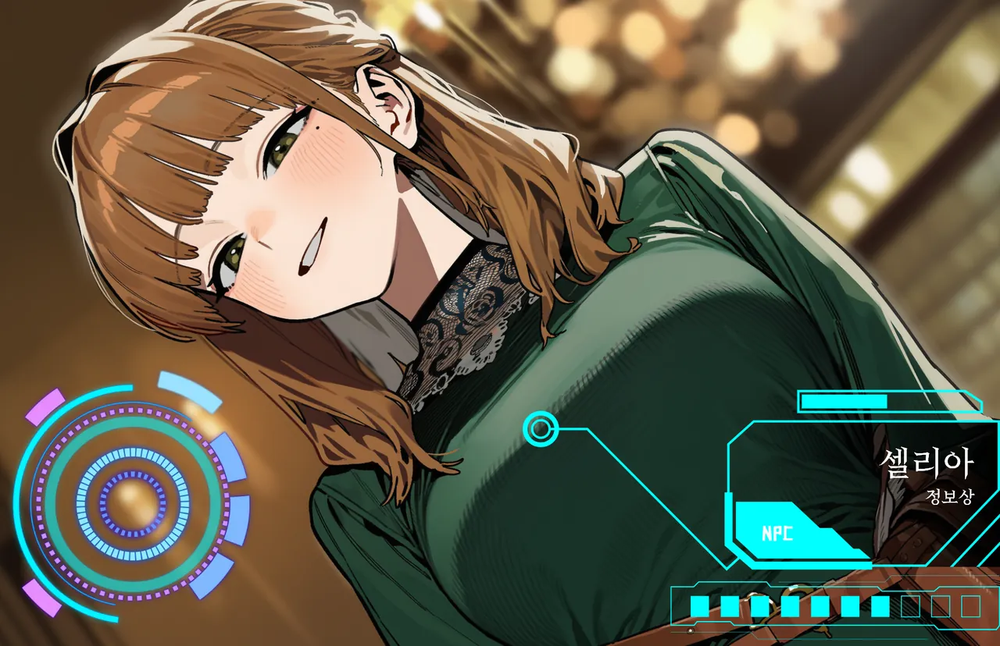

표정←→
원주민카뎃트 · 경매장 뒷골목
셀리아
공짜 정보는 없다. 미소와 함께, 값부터.
- LV
- 17
- ROLE
- 카뎃트 정보상
- AGE
- 여 · 27
경매장 뒷골목에서 시세, 소문, 길드 동향, 사변의 전조를 사고판다. 신뢰가 쌓이기 전엔 거짓을 조금씩 섞고, 가까워질수록 정확해진다. 거짓을 섞을 땐 미소가 반 박자 늦다.
칼데스 동향 같은 위험한 정보는 값이 몇 배로 뛴다. 깎으려 들면? 정보가 줄어든다.
- 외형
- 연갈색 긴 웨이브 반묶음, 녹색 눈, 눈 밑 점, 레이스 칼라 진녹색 드레스
- 말투
- 나긋한 존댓말. 상대를 "손님"이라 부르고, 값 얘기도 웃으면서.